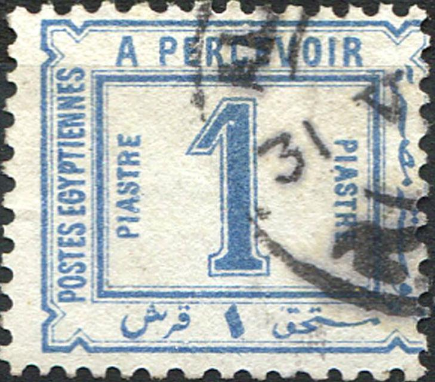
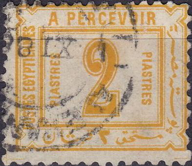
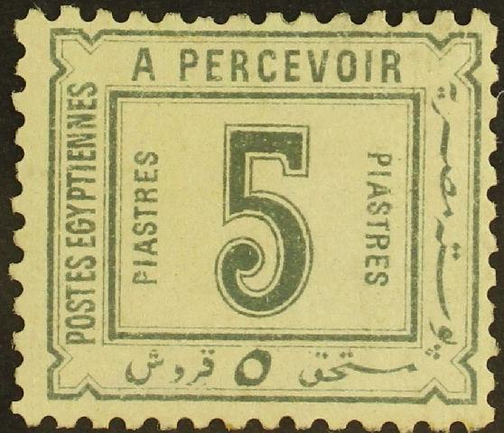
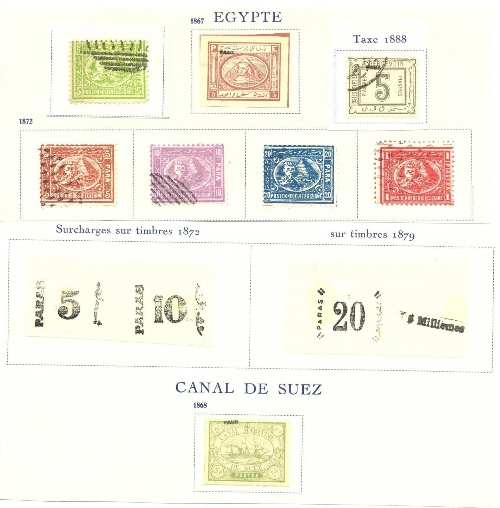
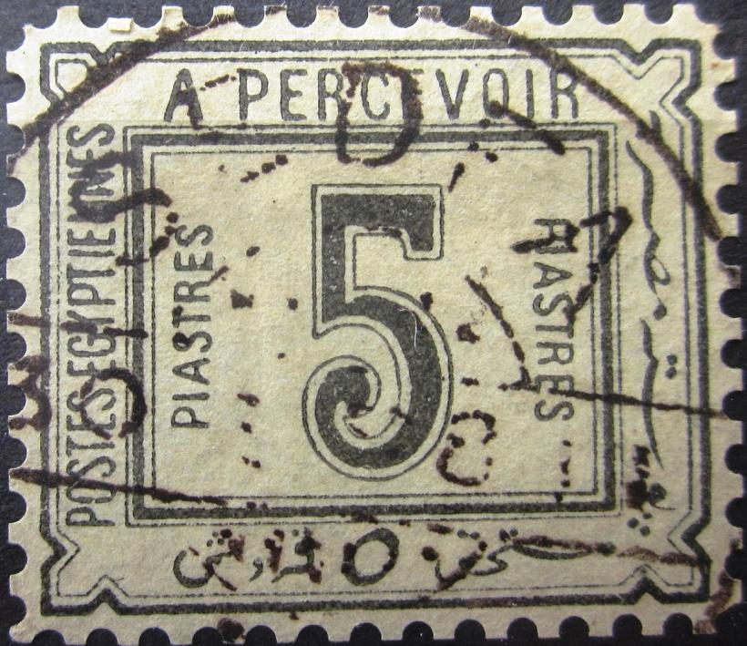
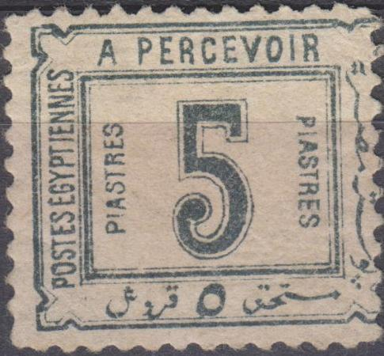
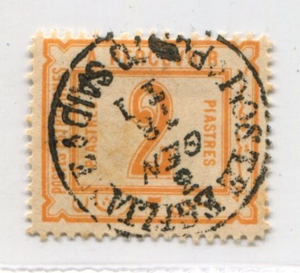
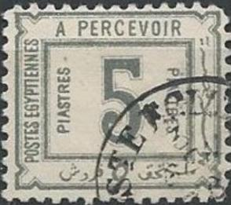
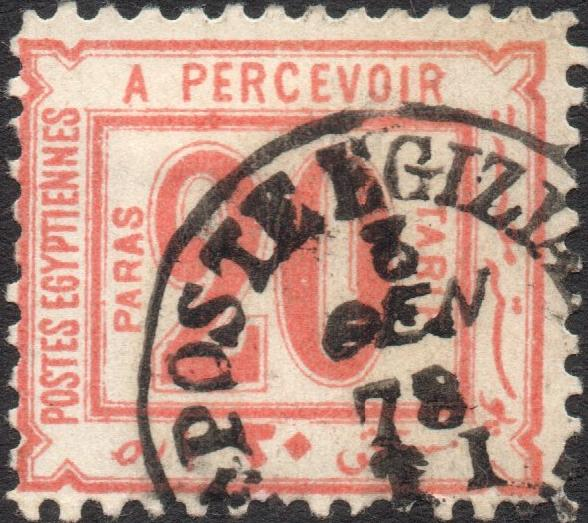
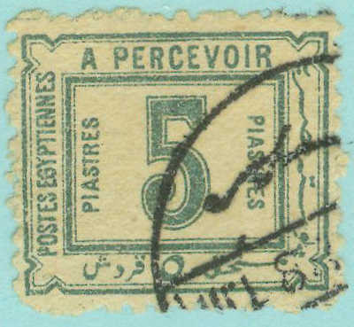

{kind=link}

{kind=link}

{kind=link}

Return To Catalogue - Egypt Postage due stamps of 1888, forgeries, part 1 - Egypt - Egypt Postage due and Official stamps - Egypt Postage due stamps of 1884, forgeries
Note: on my website many of the
pictures can not be seen! They are of course present in the
catalogue;
contact me if you want to purchase it.
  
These stamps have perforation 11 1/2. Imperforate proofs exist (but imperforate forgeries as well!). Genuine stamps sometimes have guidelines outside the design (this is not always visible though). As in the previous issue, there are four subtypes of these stamps, click here to see the subtypes.
For more forgeries of the 1888 issue, click here.
Possibly a Fournier forgery, in the Arabic text under the 'M' of
MILLIEMES' the character resembling a lying down 'E' touches one
of the dots above it (source Serrane guide). Also in the genuine
stamps, there is a line in the corner to the right and below of
the 'R' of 'PERCEVOIR', connecting the thick and outer thin
frameline.

Page from a Fournier Album with Fournier forgeries.
Fournier made the forged cancels "EBNOUB" or "SEDFA 26 MAI or 30 I" (interchangeable numbers according to the Serrane guide).
SEDFA and EBNOUB forged cancels made by Fournier, reduced sizes.
I've seen the SEDFA forged cancel being used on a forged 5
Piaster postage due stamp.

Fournier forgeries (on the left from a Fournier Album) with
forged "SEDFA 30 I ?8 T1" cancels.
Other forgery?
(Reduced size)

Could this be the same forgery? The first "S" of the
left "PIASTRES" very strange, "P" of right
"PIASTRES" slanting, etc. The text on the left hand
side appears to be too close to the inner frame. For example, the
"S" of "EGYPTIENNES" almost touches this
frameline. This letter is also misshapen. The "P" of
"POSTES" is placed too low (when compared to the inner
frameline).
 
Forgeries, possibly of Italian origins, all with the same cancel
'POSTE EGIZIANE PORT SAID 3 GEN 78 T1' (the same cancel used on
forgeries of the first set). The date is 1878 (before the stamps
were even issued!). I've seen all values of this particular
forgery set. They also exist pasted on small pieces of letters.
Note that in the 2 m, the '2' is too fat (the forger has
essentially used the '2' of the 2 Pi value of the previous
issue). In all the 2 m forgeries that I've seen there is a green
dot in the right bottom part of the '2'. Note that the Arabic
inscription on the right hand side is slightly different from the
genuine stamps in all values. The bottom right part of the 1 Pi
and 2 Pi forgeries ends too soon (as in some of the forgeries
shown earlier).
Forgery of the 2 m value with '3' in the cancel manually changed
to '18'? Next to it another 2 Pi forgery, the '2' is placer lower
in this forgery.

The same forged cancel 'POSTE EGIZIANE PORTO SAID 3 GEN 78 T1'
was applied to forgeries of the 1884 postage due stamps.
This dubious item has the same cancel as can be found on a forged
Suez Canal Company stamp: 'PORT SAID
2-1-14 2-4-5 PORT SAID'

This forgery has the word 'FAKE' printed at the back (first
image). According to me, the right "PIASTRES" has the
top loop of the final "S" too small. Next to it some
stamps which I presume are the same forgery, but now with
unreadable cancels or even imperforate. The "C" of
"PERCEVOIR" appears larger. In my view, the most upper
(small) Arabic character on the right hand side, is placed too
high, when compared to the triangular ornaments next to it.
A block of 5 Pi forgeries? The same forgery as shown above?
1 Pi values in the colors violet or orange are forgeries:
{kind=link}
{kind=link}
{kind=link}
{kind=link}
{kind=link}
{kind=link}
{kind=link}